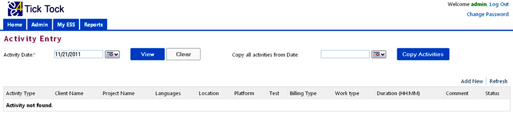

FUNCTION
- The Activity Entry page helps an employee to add activities for a particular day.
- Activity entry page helps the employees to enter the day today activities and capture project and miscellaneous activities here.
- Activities can be captured for clients, projects, various work types and billing types.
ACCESSIBLE BY
- All Users.
STEPS TO ADD AN ACTIVITY
- From the Home page, My ESS Activity Entry
- This will take us to the Activity Entry page.

Steps to add new activity
- Click on the Add New button to open the activity Entry page.
- By Default, the Select UserName field displays the user who logs in, so that the activity can be entered for the user who logs in. If the logged in user wants to enter activity for other user select the user name for whom the activity has to be entered using the following steps
- Press F2 or click on the icon
 to open the search window
to open the search window - Select the City or enter Name or Role or Email ID of the manager to search.
- Click on the Filter button to display employees meeting the above search criteria.
- Click on the cancel button to exit without saving.
- To select a manager click on the Select button or click on the Clear button to clear the search criteria and results.
- Select the Date for which the activity has to be entered
- Select the Activity Type, whether it project or miscellaneous activity
- To enter the Client, press down arrow key to list the client masters or type few characters of client name to display list matching the characters. Select the client from the drop down menu
- To enter the Project, press down arrow key to list the project masters or type few characters of project name to display list matching the characters. Select the project from the drop down menu.
- Location, Platform, Test corresponding to the Project & Client auto populates. If there are multiple Locations, Platforms or Tests select the appropriate data for the activity. If only one platform and test is linked with the selected client, then system selects the information automatically to reduce the entry time.
- Time zone is selected based on the Location and it is not editable.
- To enter the Language, press Drop down key to list the Language masters or type few characters of Language name to display list matching the characters. Select the Language from the drop down menu.
- Select the Work Type from the drop down menu
- Select the Billing Type from the drop down menu
- Enter the total duration took for the activity in HH:MM format.
- The IsAutoApproval check box will get enabled only when the activity is entered for other users. By default the check box will be marked or checked. If the check box is marked / checked all the entered activities for that particular date will not go for approval. If the check box is not marked / checked then all activities entered for that day will go for approval to the supervisor of the user for whom the activity is entered
- Enter comments in the comments field if any additional information regarding the activity has to be give.
- Then click on Update button to save the activity or click Close button to exit without saving the activity.
Steps to add Miscellaneous Activity
- Select the Time Zone and Work Type
- To enter the Location, press down arrow key to list all locations or type few characters of location to display list matching the characters. Select the lcoation from the drop down menu
- Enter the total duration took for the activity in HH:MM format.
- Enter comments in the comments field if any additional information regarding the activity has to be give.
- Then click on Add button to save the activity or click Close button to exit without saving the activity.

- End user who do not have any subordinates cannot enter activity for other users
- Supervisor, Team Leaders, Managers or Users who have admin rights can only enter activities for all other users
- All activities entered for a day will go for approval to the supervisor of the user for whom the activity is entered, provided the IsAutoApproval check box is not marked / checked
- Supervisor, Manager or admin user can enter activity for other users but cannot modify entered activity, even if the activity was entered by the Supervisor, Manager or admin user.
- Entered activity can only be modified by supervisors of the user for whom the activity was entered
Steps to copy details from existing activity
- From the activity Entry page, Select the date for which activity has to be entered in Activity Date field.
- Then select the date from which the details has to be copied and click on the Copy Activities button.
In the below example the activities of 11/01/2011 will be copied to 11/02/2011

Steps to edit or delete existing activity
- From the activity Entry page, select the date for which activity has to be entered in Activity Date field.
- Click on the View button, this will display the activity entered for the date entered.
- Then Click Edit to make any changes to the activity entered, which will take to the Edit Activity Entry page. (or) Click Delete to delete the activity.
- The Edit Activity page has the same fields as that of the Add Activity Page.
- Make changes and then click update button to save the activity or click Close button to exit without saving the activity.
Note: An activity can be edited or deleted before it is approved; once the activity is approved the activity cannot be modified.
Steps to work on rejected activities
When user logs into the Home page, it will show the rejected activities for that particular user if they have any.
Go to Activity Entry screen My ESS Activity Entry.
Enter the date of the rejected activity in the Activity Date field
Then click on View button to view the details of the rejected activity.
Click on the Edit link on the left side of the activity to edit the details of the activities that is rejected. This will take us to the Edit activity Page
The Edit activity screen also shows the reason entered by the superior for rejecting the activity.
User can make changes in the activity based on the reason given.
Then click on Update button to save the changes.
- The activity status will change to Waiting for Approval.
- Similarly all rejected activities can be updated. The updated activity status will change to waiting for Approval and it will be moved to the superior for approval.
- Click on the Add new link, if any activity has to be added for that day.
Compatible browsers
On Windows OS


On Mac OS